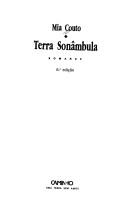
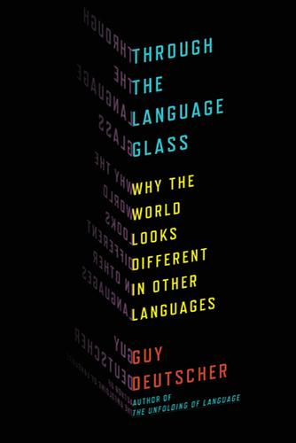
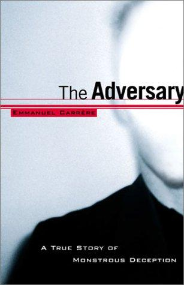
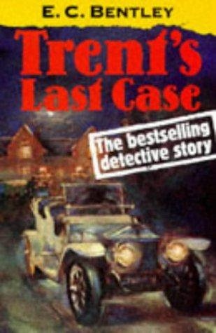
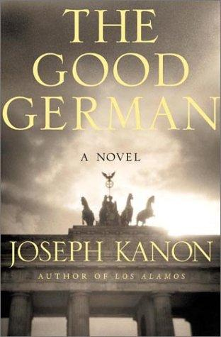

Recommendations for the week of 28 September 2026.
Three edges chosen to sidestep the veins the recent weeks leaned on — no poetry, no probability-philosophy this time. The translated fiction thread reaches lusophone Africa for the first time, a region and language the shelves have never held; the narrative-nonfiction pick opens linguistics, a domain the shelf has never touched, chosen for its refusal to hand-wave; and the forensic true-crime edge takes a reflexive, translated turn that ties the criminology background to the problem of self-deception. The comfort picks hold the three best-loved veins — big-idea SF, Golden-Age crime, cold-weather espionage — but reach for fresh authors: a mythic Hugo winner, the novel that sabotaged the infallible detective, and a murder in the rubble of 1945 Berlin.




